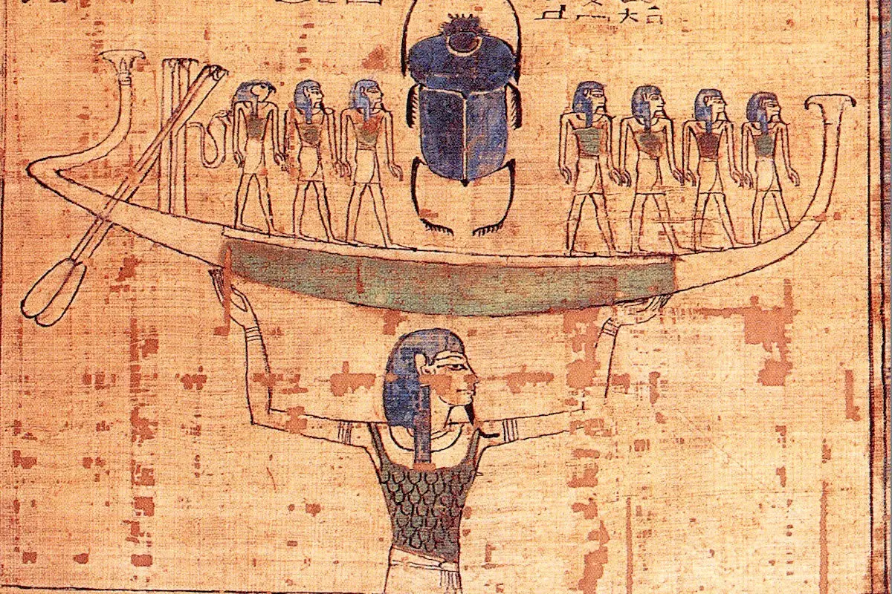
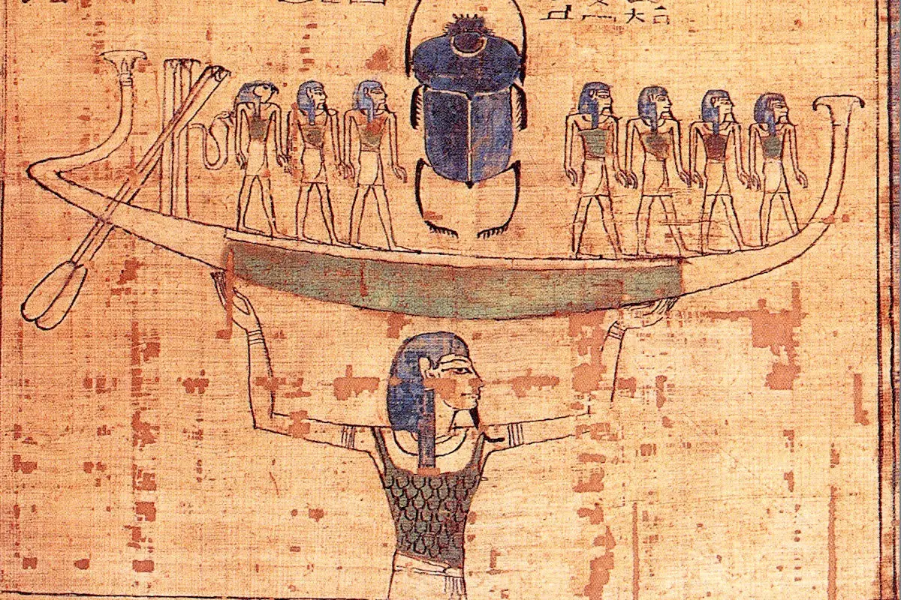

La Creación en la Cultura Egipcia
En este blog abordaremos la creación Egipcia y la interrelación entre el caos y el orden, la luz y la oscuridad,
¿Que trata?
El origen del universo comienza con Nun, el océano primordial de caos del cual emerge una colina primordial. Dependiendo de la región, diferentes deidades son responsables de la creación. En Hermópolis, la Ogdóada, un grupo de ocho dioses, da origen a un huevo cósmico del que nace el dios solar Ra. En Heliópolis, Atum se manifiesta en la colina primordial y crea a los primeros dioses, Shu y Tefnut, quienes a su vez generan a Geb y Nut, y posteriormente a Osiris, Isis, Seth y Neftis, estableciendo el orden cósmico. En Menfis, Ptah crea el mundo mediante el poder de su pensamiento y palabra, y en Tebas, Amon-Ra, el dios oculto y visible, es el creador. Estas historias comparten elementos comunes como el caos acuático de Nun, la colina primordial y la creación de un orden cósmico simbolizado por el concepto de Maat, que representa la justicia y la armonía.

Significado y Simbolismo
En este blog abordaremos la creación Egipcia y la interrelación entre el caos y el orden, la luz y la oscuridad,
¿Que trata?
El origen del universo comienza con Nun, el océano primordial de caos del cual emerge una colina primordial. Dependiendo de la región, diferentes deidades son responsables de la creación. En Hermópolis, la Ogdóada, un grupo de ocho dioses, da origen a un huevo cósmico del que nace el dios solar Ra. En Heliópolis, Atum se manifiesta en la colina primordial y crea a los primeros dioses, Shu y Tefnut, quienes a su vez generan a Geb y Nut, y posteriormente a Osiris, Isis, Seth y Neftis, estableciendo el orden cósmico. En Menfis, Ptah crea el mundo mediante el poder de su pensamiento y palabra, y en Tebas, Amon-Ra, el dios oculto y visible, es el creador. Estas historias comparten elementos comunes como el caos acuático de Nun, la colina primordial y la creación de un orden cósmico simbolizado por el concepto de Maat, que representa la justicia y la armonía.

Significado y Simbolismo
- Los Hijos de Geb y Nut: Estos dioses reflejan la dinámica de la vida, la muerte, y la regeneración, así como las fuerzas de la naturaleza y la sociedad.
- Los Dioses Creadores: Los diferentes dioses creadores (Atum, Ptah, Amon-Ra) representan distintas formas de concebir el acto creador. Atum y Ra simbolizan el sol y la regeneración diaria, Ptah representa la creación a través del pensamiento y la palabra, y Amon-Ra combina el poder oculto y la manifestación visible.
- Nun y el Océano Primordial: Nun representa el caos primigenio y la potencialidad de la creación. Es la fuente de todo lo que existe, un estado de inexistencia y desorden antes de la creación del mundo ordenado. El agua de Nun simboliza la inmensidad y la profundidad de la creación potencial, el lugar donde yacen las semillas de todas las cosas.